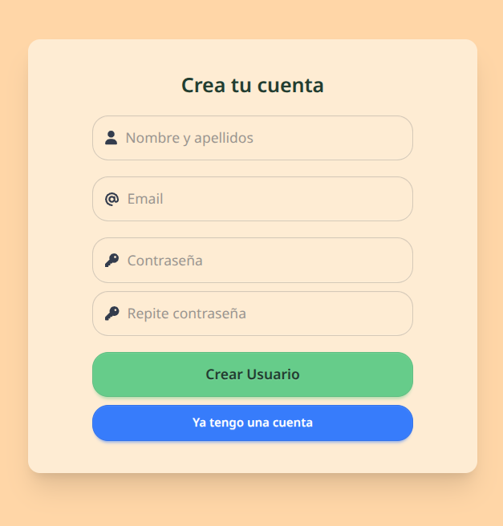
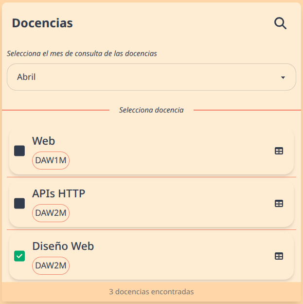

Manual de Usuario: Sistema de Seguimiento Docente
Introducción
Bienvenido al Sistema de Seguimiento Docente, una aplicación web diseñada específicamente para facilitar el seguimiento mensual de la programación didáctica de los módulos que impartes. Esta herramienta te permitirá:
- Registrar de manera eficiente el progreso de tus clases
- Documentar cualquier desviación respecto a la programación inicial
- Mantener un historial completo de tus avances por mes y evaluación
Acceso
Deberás iniciar sesión o registrarte antes de poder hacer uso del sistema.
Iniciar sesión
Para iniciar sesión en el sistema si ya tienes una cuentra:
- Abre tu navegador web y acceda a la dirección del sistema proporcionada por tu institución.
- Introduce tu email y tu contraseña.
- Haz clic en el botón "Iniciar Sesión"
Registrarse
Para crear una nueva cuenta en el sistema:
- Abre tu navegador web y acceda a la dirección del sistema proporcionada por tu institución.
- Si ya se encuentra en la página de inicio de sesión, haga clic en el botón "Registrarse".
Formulario de Registro
En la página de registro, deberá completar el siguiente formulario:

Campos Obligatorios
| Campo | Descripción | Requisitos |
|---|---|---|
| Nombre y apellidos | Introduce tu nombre completo | El sistema utilizará este nombre para identificarlo dentro de la plataforma |
| Introduce tu dirección de correo electrónico | Debe ser un correo válido y activo, ya que recibirá notificaciones del sistema | |
| Contraseña | Cree una contraseña segura | Debe contener al menos 8 caracteres |
| Repite contraseña | Introduzca nuevamente la contraseña | Debe coincidir exactamente con la contraseña introducida anteriormente |
Consideraciones Importantes
- Nombre completo: Es fundamental que Introduce tu nombre y apellidos completos tal como aparecen en los registros oficiales de la institución para facilitar la identificación y asignación correcta de grupos de estudiantes.
- Correo electrónico: Se recomienda utiliza tu correo institucional para garantizar la recepción de todas las notificaciones relacionadas con tus grupos de estudiantes.
Posibles Errores
El sistema validará la información proporcionada y mostrará mensajes de error cuando:
- Algún campo obligatorio esté vacío
- El formato del correo electrónico sea incorrecto
- La contraseña tenga menos de 8 caracteres
- Las contraseñas introducidas no coincidan
- El correo electrónico ya esté registrado en el sistema
En caso de error, revisa los campos marcados y corrije la información antes de intentar registrarte nuevamente.
Finalización del Registro
Una vez completados correctamente todos los campos:
- Haz clic en el botón "Crear Usuario"
- El sistema procesará tu solicitud y, si todo es correcto, creará tu cuenta
- Podrás iniciar sesión inmediatamente utilizando el correo y la contraseña registrados
Si ya tienes una cuenta en el sistema, puedes hacer clic en "Ya tengo una cuenta" para ir directamente a la página de inicio de sesión.
Panel de Navegación
El sistema cuenta con un panel de navegación lateral que está siempre visible y te permite gestionar tus seguimientos.
Elementos del Panel de Navegación:

1. Selector de Mes
- En la parte superior encontrarás un selector de mes que te permite elegir el período para el que deseas consultar o crear seguimientos.
- Por defecto, se muestra el mes actual.
2. Buscador de Docencias
- Puedes expandir un campo de búsqueda haciendo clic en el icono de lupa.
- Permite filtrar tus docencias por nombre del módulo o grupo.
- Para cerrar la búsqueda, haz clic en el icono X.
3. Lista de Docencias
- Muestra todas tus asignaciones docentes (módulo + grupo).
- Cada docencia muestra:
- Nombre del módulo
- Nombre del grupo (en un recuadro redondeado)
- Un indicador de estado:
- ✅ Cuadrado marcado verde: Seguimiento completado para el mes seleccionado
- ⬜ Cuadrado sin marcar: Seguimiento pendiente para el mes seleccionado
- Si no aparece ninguno, es posible que el administrador de tu sistema aún no te haya asignado ninguna docencia.
4. Acciones Disponibles
- Clic en la docencia: Accede al formulario de seguimiento para el mes y docencia seleccionados
- Icono de tabla: Accede a una vista de tabla con todos los seguimientos para esa docencia
5. Contador de Docencias
- En la parte inferior se muestra el total de docencias que tienes asignadas o que coinciden con tu búsqueda.
Formulario de Seguimiento
Al seleccionar una docencia y un mes específico, accederás al formulario de seguimiento dividido en varias secciones:

1. Información General
En la parte superior del formulario encontrarás:
- El nombre del módulo y grupo seleccionado
- Una indicación si el seguimiento fue realizado originalmente por otro profesor (en caso de sustituciones)
2. Situación Actual de la Docencia
Esta sección te permite documentar el estado actual de tus clases:
Unidades de trabajo completadas
- Verás una lista de todas las unidades didácticas del módulo
- Marca las casillas de las unidades que ya has finalizado
- Puedes hacer clic directamente sobre el nombre de cada unidad para marcarla o desmarcarla
Unidad de trabajo actual
- Selecciona del desplegable la unidad que estás impartiendo actualmente
- Esta selección es obligatoria
Evaluación
- Indica a qué evaluación corresponde (Primera, Segunda o Tercera)
- Este campo es obligatorio
Último contenido impartido
- Describe brevemente el último tema o contenido trabajado con el grupo
- Si existe un seguimiento anterior, verás como referencia lo que indicaste previamente
- Este campo es obligatorio
3. Estado de la Programación
Aquí indicas cómo avanza la programación respecto a lo previsto:
Estado actual
- Al día: La programación se sigue según lo planeado
- Atrasado: Hay retraso respecto a la programación inicial
- Adelantado: Se ha avanzado más de lo previsto inicialmente
Justificación del estado actual
- Este campo aparece automáticamente si seleccionas "Atrasado" o "Adelantado"
- Debes explicar los motivos por los que existe esta desviación
- Es un campo obligatorio cuando el estado no es "Al día"
4. Cumplimiento de la Programación
Esta sección documenta si estás siguiendo la programación didáctica aprobada:
Cumple la programación
- Marca esta casilla si estás siguiendo la programación tal como fue aprobada
- Por defecto está marcada
Si desactivas "Cumple la programación"
Se mostrarán campos adicionales obligatorios:
Motivo de incumplimiento:
Debes seleccionar entre:
- Cambio en los Contenidos
- Cambio en la Secuenciación y distribución temporal de las UTs
- Cambio en Actividades
- Cambio en Evaluación
Justificación del incumplimiento:
Campo donde debes explicar detalladamente por qué ha sido necesario modificar la programación aprobada
5. Guardar el seguimiento
En la parte inferior del formulario encontrarás:
- Guardar nuevo seguimiento: Si es la primera vez que realizas un seguimiento para este mes.
- Guardar cambios: Si estás modificando un seguimiento que ya existe.
Tras enviar el formulario, un mensaje te informará si el guardado ha sido exitoso o si hay errores que debes corregir.
Vista de Tabla de Seguimientos
Al hacer clic en el icono de tabla junto a una docencia en el panel de navegación, accederás a una vista completa de todos los seguimientos de esa asignación.
Información General del Módulo
En la parte superior encontrarás una tarjeta con:
-
Información del Módulo:
- Nombre del módulo
- Ciclo formativo al que pertenece
- Año académico actual
- Grupo asignado
-
Listado de Unidades de Trabajo:
- Todas las UTs del módulo numeradas y con sus títulos
Tabla de Seguimientos
La tabla principal muestra cronológicamente todos los seguimientos realizados para esta docencia con las siguientes columnas:
| Columna | Descripción |
|---|---|
| Mes | Nombre del mes al que corresponde el seguimiento |
| Estado | Estado de la programación con código de colores: • Verde: Al día • Rojo: Atrasado • Azul: Adelantado Incluye la justificación si está disponible |
| Unidades de Trabajo completadas | Número de UTs completadas respecto al total y listado de las mismas |
| Unidad de Trabajo actual | UT que se está impartiendo en ese mes |
| Último Contenido | Resumen del último contenido impartido |
| Cumple Programación | Indicador Sí/No con código de colores: • Verde: Sí • Rojo: No Incluye el motivo y justificación si no se cumple |
| Evaluación | Indica a qué evaluación corresponde (Primera, Segunda o Tercera) |
| Examinar | Botón con icono de ojo que permite acceder directamente al formulario completo de ese seguimiento |
Esta vista te permite tener una panorámica completa de la evolución de tu docencia a lo largo del curso académico, facilitando la detección de patrones o problemas recurrentes.
Consejos Útiles
-
Actualización mensual: Completa los seguimientos mensualmente para mantener al día la documentación del departamento.
-
Detalle en justificaciones: Sé específico en las justificaciones para documentar adecuadamente cualquier incidencia o cambio.
-
Revisión de histórico: Consulta los seguimientos anteriores antes de crear uno nuevo para mantener la coherencia.
-
Planificación: Utiliza la vista de tabla para tener una perspectiva global de todos tus seguimientos a lo largo del curso.
-
Búsqueda eficiente: Si tienes muchas docencias asignadas, utiliza el buscador para encontrar rápidamente un módulo o grupo específico.
Preguntas Frecuentes
¿Puedo modificar un seguimiento después de haberlo guardado?
Sí, puedes acceder nuevamente al formulario del mes correspondiente y hacer los cambios necesarios.
¿Cómo puedo ver el historial completo de seguimientos de un módulo?
En el panel lateral, junto a cada docencia, encontrarás un icono de tabla . Al hacer clic en él, accederás a una vista completa que muestra todos los seguimientos realizados para ese módulo y grupo a lo largo del curso académico.
¿Cómo sé qué seguimientos tengo pendientes?
En el panel lateral de navegación, los seguimientos pendientes aparecen con un cuadrado sin marcar, mientras que los completados muestran un cuadrado verde marcado.
¿Quién puede ver mis seguimientos?
Los seguimientos son visibles para ti, para aquellos profesores que compartan una misma docencia que tú (que imparten al mismo módulo y grupo para el que hiciste el seguimiento)
¿Puedo realizar el seguimiento de un mes pasado?
Sí, el sistema permite crear seguimientos de meses anteriores si no los has completado. Simplemente selecciona el mes deseado en el selector de mes del panel de navegación.
¿Se guarda automáticamente el borrador de mi seguimiento?
No, el sistema no guarda borradores automáticamente. Debes hacer clic en el botón "Guardar" para registrar tu seguimiento.